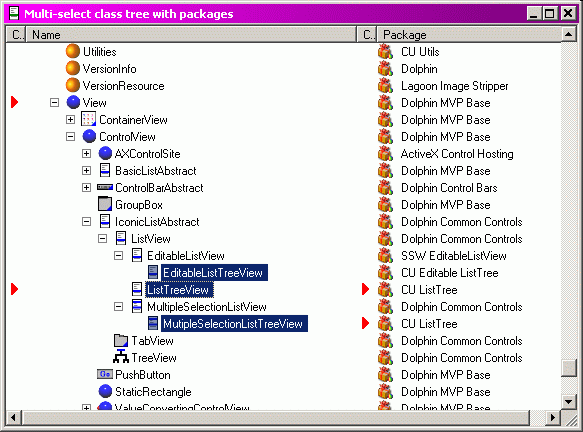

|
ListTree for Dolphin Smalltalk |
|||||||||||||||
|
ListTree |
ListTree adds a new kind of View, ListTreeView, that is a hybrid of ListView and TreeView; it allows you to use ListViewColumns with a TreeView-like presentation. It uses the same technique as (I presume) Microsoft do for Outlook Express's message folder. I.e. it's really a ListView that indents the primary column's items according to how deep in the tree they are, and uses the rows' “state” images to show open/closed indicators. It can also support multiple-selection. EditableListTreeView is a similar View that is based on John Aspinall's excellent EditableListView. It provides a multi-column tree view which supports in-place editing of any column's value. You will also need a copy of John's package, which can be downloaded from the Solutions Software website, if you want to use it. The class comment for ListTreeView has more details, and some examples. But you'd have to install the package to read that, so here's an example screenshot instead:  It's probably obvious, but the image shows a ListTree on the class hierarchy; it has four columns showing respectively:
You'll notice that three classes are selected. FWIW, the headers work to sort the items too (items are sorted within the list of children of each parent, the tree itself is not disrupted). Packages
|
Copyright © Chris Uppal, 2003-2005